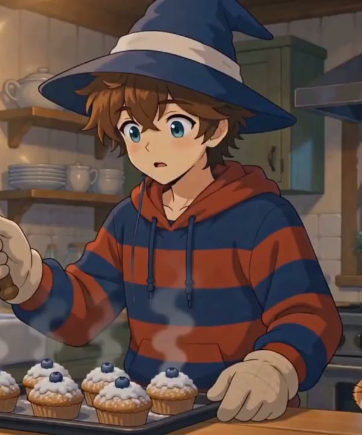

El Mago de Finlandia
Su nombre es Nayde, pero en toda La Suomilandia lo conocen como el Mago de Finlandia. Es un joven mago que vive en una cabaña de madera entre pinos nevados. Su magia funciona mejor en la cocina que en ningún otro lugar: con un toque de varita, lo que sale del horno puede cobrar vida.
- Pelo castaño despeinado
- Ojos azules
- Sombrero de mago azul marino
- Buzo con capucha a rayas
- Guantes claros
- Varita de madera
Colores del buzo: azul marino y rojo
Su costumbre: después de comer muffins, decir "la suomilandia". Y después otra vez. Y otra. Por tiempo indefinido.
Falta completar: qué otras cosas le gusta cocinar y alguna manía graciosa más.